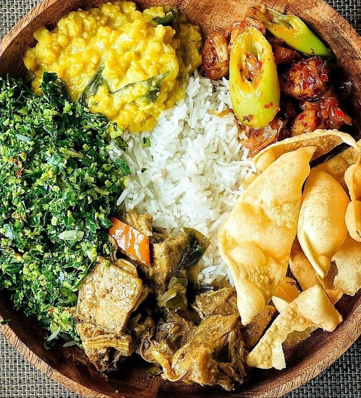

Rice and Curry
Price: $12.99
Serves: 2 people
Ingredients:
- Steamed Rice
- Chicken or Beef
- Lentil Curry
- Vegetable Curry
- Coconut Sambol
- Spices
Description:
Rice and Curry is a traditional Sri Lankan dish that offers a perfect blend of flavors. It includes steamed rice accompanied by a variety of curries, typically featuring chicken or beef, lentils, and vegetables, all cooked with authentic spices. This dish is a staple in Sri Lankan cuisine, known for its rich taste and aromatic appeal.